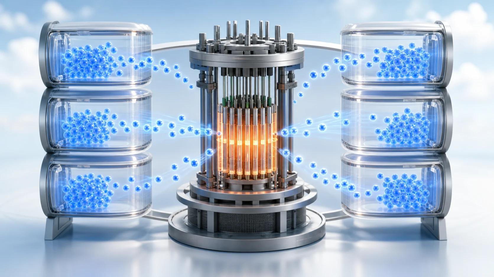
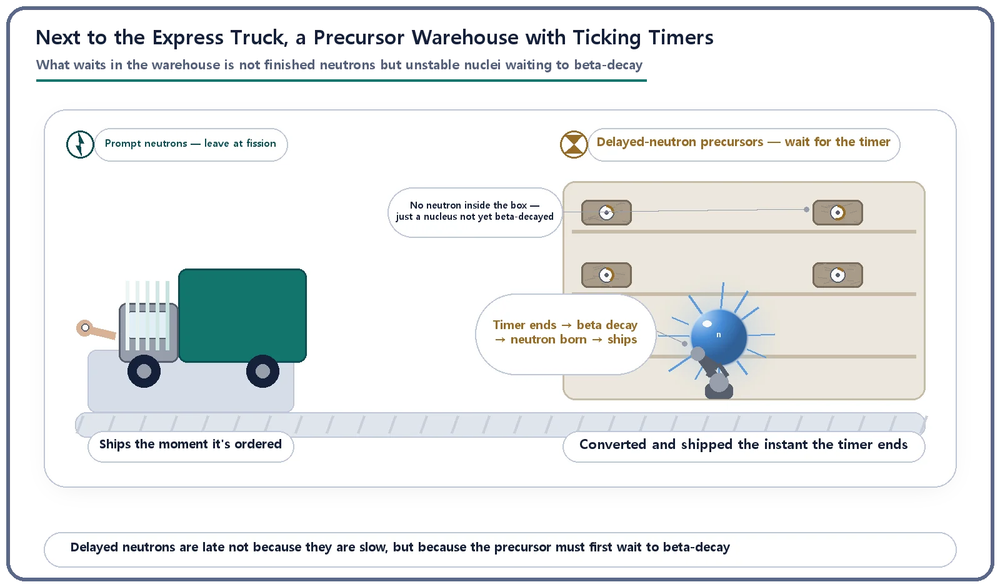
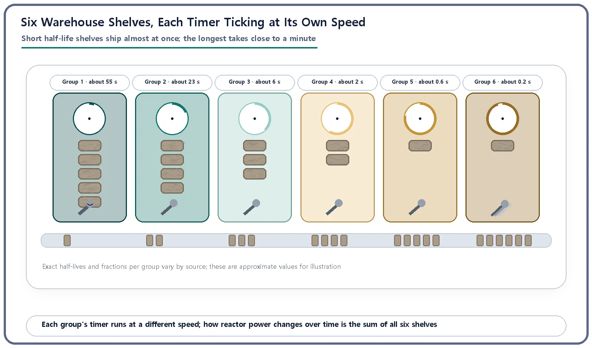

Reactor Kinetics & Reactivity · 108
Express Shipping vs. Scheduled Delivery — What Delayed Neutron Precursors Really Do
Delayed neutrons are late not because they are slow, but because an unstable nucleus must first wait to beta-decay.

Delayed neutron precursors are a few special fission fragments whose daughter nucleus, right after beta decay, ejects one extra neutron. What waits during the delay is not a stored neutron but an unstable nucleus that has not yet beta-decayed; the neutron appears almost instantly once it does. Grouped by half-life into six groups (roughly 0.2 to 55 seconds), precursors set the pace of reactor power changes.
Two parcels, two departure rules
Say you order two items from a delivery app late at night. One is marked "ships immediately," and a truck pulls out the moment you tap the button. The other is "scheduled delivery": it first goes onto a shelf in a nearby warehouse and only leaves on a truck after some time has passed. Both arrive in the end, but what decides when each one leaves is completely different.
The same thing happens inside a reactor. Some neutrons fly out at the very instant of fission; others take their time, emerging seconds or even minutes later. We have already met the first kind as prompt neutrons and the second as delayed neutrons, and seen that this time gap is what lets people control a reactor at a manageable pace. But that leaves a question: during those seconds or tens of seconds, where exactly is a delayed neutron before it appears? The answer is today's main character, the delayed neutron precursor.
Where does the scheduled package wait?
If the delayed neutron is the scheduled delivery, the warehouse where it waits is the precursor. When a uranium nucleus splits, a shower of fission fragments pours out. Most of them carry too many neutrons and are unstable, so they gradually settle down through a process called beta decay. But for a very small number of special fragments, the product of beta decay (the daughter nucleus) is born unusually highly excited. These special nuclides, which end up releasing one extra neutron after beta decay, are the precursors.
Here is a point that is easy to get wrong. It is tempting to picture the precursor warehouse as storing ready-made neutrons in boxes. It doesn't. What sits on the shelves is not a finished neutron parcel but a box of "raw material" that isn't ready to ship: the unstable nucleus itself, which has not yet beta-decayed. Every box has its own countdown timer, and only when that timer (the beta-decay half-life) runs out is the content turned into a neutron and loaded straight onto the truck. So no neutron hides quietly in the warehouse. Something that is not yet a neutron waits, and at the moment the timer rings a neutron is born and ships immediately.
That is also why a delayed neutron is not a "slow-moving neutron." Once created, it shoots out just as fast as a prompt neutron. The only thing that is late is the wait for the timer to run out.

Why only a few fragments qualify for the warehouse
Fission fragments come in countless varieties, but only a handful can become precursors. For most of them, the daughter nucleus left after beta decay is at most slightly excited, with too little energy to do anything dramatic, so it gives off a gamma ray and quietly settles down. For a very few nuclides, though, the daughter happens to be born above the minimum energy needed to pull one whole neutron off the nucleus. When that condition is met, instead of calming down with gamma rays, the daughter immediately flicks out a neutron. Only nuclides that meet this demanding condition earn precursor status. In warehouse terms, only special items licensed for scheduled delivery are allowed inside.
Not one shelf, but six
The precursor warehouse doesn't have just one shelf. Dozens of precursor nuclides are actually known, and tracking each one separately would be cumbersome, so reactor physics conventionally bundles those with similar timers (half-lives) into six groups. Picture six shelves, each with its countdown running at a different speed.
The most urgent shelf's timer runs out in less than a second; the most relaxed shelf takes close to a minute (around 55 seconds). The amount stocked on each shelf, meaning the share of precursors from that group created per fission, also differs. As a general tendency, the middle-speed shelves (a few seconds) tend to hold more stock than the very fast or very slow shelves at the two ends. So how a reactor's power moves over time after a reactivity change is the sum of all six shelves releasing boxes at the same time, each to its own rhythm. Short half-life shelves dominate the first few seconds, while long half-life shelves draw out a long "tail" in the power change well afterward.

A very simple formula for warehouse stock
How many raw-material boxes are on each of these six shelves right now is a value that reactor simulators actually track, moment by moment. Put very simply, the relationship is:
Change in stock on one shelf (group) = new stock arriving from fission − stock leaving as timers run out
The amount leaving is proportional to the stock currently on that shelf, and the proportionality constant is that shelf's own decay constant (the shorter the half-life, the larger this value and the faster stock drains away). This is not just an analogy. It is a term actually computed for each of the six groups in the standard model of reactor kinetics, the point kinetics equations. "How much is stocked in the warehouse" is a physical quantity that reactor simulators and safety-analysis codes handle as real numbers.
Why reactors care about this warehouse system
The timer speeds and stock shares of these six shelves are not mere theoretical details. The standard model that calculates how reactor power changes over time, and the safety settings built on that calculation, are all designed and verified on the basis of six-group data: for example, the limits that sound an alarm or shut the reactor down when power rises too fast, and the limits on how quickly power may be raised during startup. You need to know the timer speed of every shelf to predict accurately how far reactor power will move seconds or tens of seconds after a small change in reactivity.
Two common misunderstandings
Misunderstanding 1: "A precursor is a storage tank holding neutrons." No. What sits in the warehouse is not a finished neutron but an unstable nucleus that has not yet beta-decayed. The neutron is created and emitted only at the moment that nucleus decays. A neutron that already existed is not being locked up and then released.
Misunderstanding 2: "The precursor and the nucleus that actually releases the neutron are the same thing." Strictly, they are different. The nucleus that beta-decays (the precursor) and the nucleus born excited that actually emits the neutron (the daughter) are different nuclides. But the daughter stays excited for practically no time at all, so all the delay we experience comes from the precursor's beta-decay step.
Key takeaways
A delayed neutron precursor is a fission fragment whose daughter nucleus, after beta decay, releases one more neutron.
What waits in the warehouse is not a finished neutron but an unstable nucleus that hasn't beta-decayed yet; the neutron is created by the daughter right after beta decay, almost instantly.
Delayed neutrons are late not because the neutrons are slow, but because of the wait (half-life) before the precursor beta-decays.
Precursors are grouped into six groups with different half-lives (roughly 0.2 to 55 seconds), and this group data underpins the standard model of reactor power over time and many safety settings.